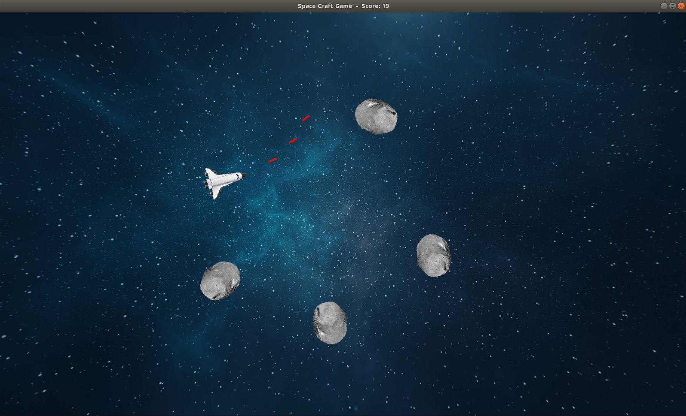

Space Craft is 2D game that I developed using C++ and SFML graphics library. For more information about SFML please check the link.
A game scene from Space Craft is shown below.

Aim of the game is to shoot the asteroids by pressing space key and moving the space craft using arrow keys to escape from asteroids. Every time an asteroid is shot by fires of the space craft, game score is incremented and it is shown above next to the game title. If an asteroid hits the space craft the game is over. When the game is over a message box is displayed with game score and game window will be closed after 5 seconds.
If you are more interested in Space Craft game, you can check the Github page of the Space Craft project.
Some of the gameplay videos of Space Craft game are shown below.


I added the gameplay videos as gif for a better view, but sometimes gif videos require too much time to be loaded on browser. In such cases, game could be seen as running a bit slow and this is related with browser and connection speed rather than actual gameplay. Also to decrease the page load time, I needed to decrease video quality of gameplay. That is whay it looks in a little bit low resolution.